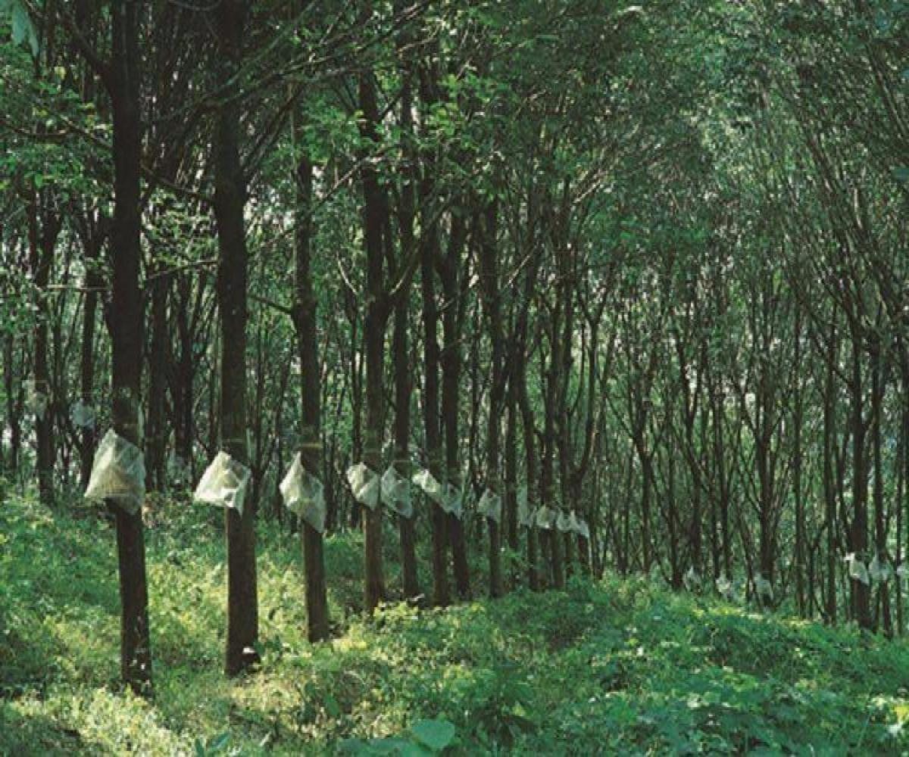

RUBBER
Introduction
"Rubber farming is primarily done in the hilly regions of Kerala due to the favorable climate and soil conditions. Farmers plant rubber trees in smallholdings and maintain them for around 7 years before tapping the trees to collect the latex. The trees can be tapped for latex for around 25-30 years."
Climate and Soil
The rubber trees grow well in well-drained soil with a pH range of 5 to 7.5. Kerala's climate is ideal for rubber farming, with an average annual rainfall of around 3000mm and temperatures ranging from 20°C to 35°C.ṭ
Cultivation Techniques
Rubber trees are planted at a distance of around 6m x 6m or 8m x 8m.They take 5-7 years to mature and start producing latex.In Kerala, farmers usually plant the trees during the monsoon season.
Processing Methods
The latex collected from the rubber tree is processed using various methods, such as coagulation, washing, and drying, to produce rubber sheets. The rubber sheets are then smoked to increase their durability and shelf life.
Pest and Disease Management
Rubber farming in Kerala is prone to various pests and diseases such as leaf spot, white root disease, and mealybug infestations. Farmers use various methods to manage pests and diseases, such as crop rotation, pruning, and the use of pesticides.
Government Support
The Kerala government provides various subsidies and support to encourage rubber farming in the state. Farmers can avail of loans and subsidies for various activities such as planting, tapping, and processing. The government also provides training and extension services to improve the productivity of rubber farms.